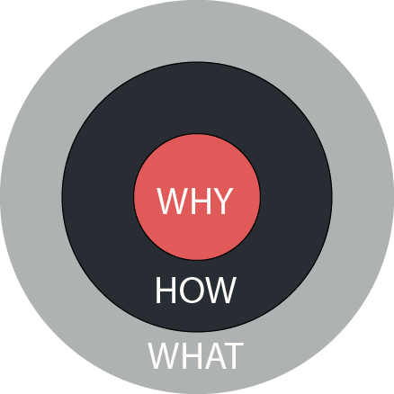
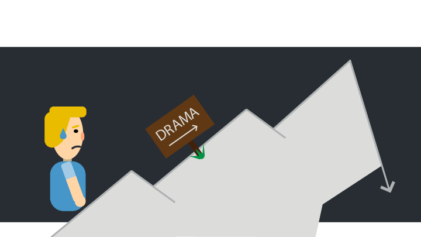
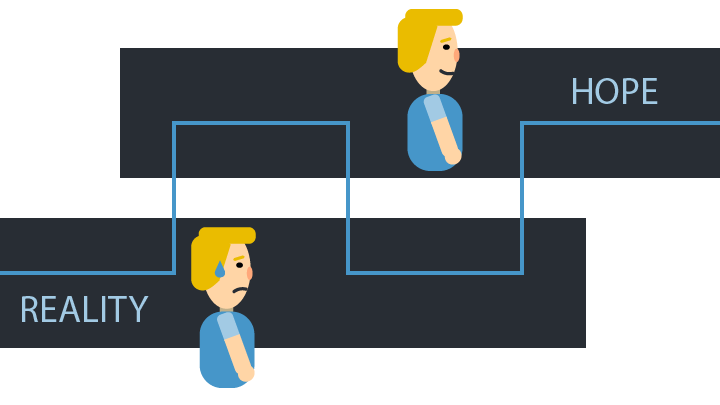
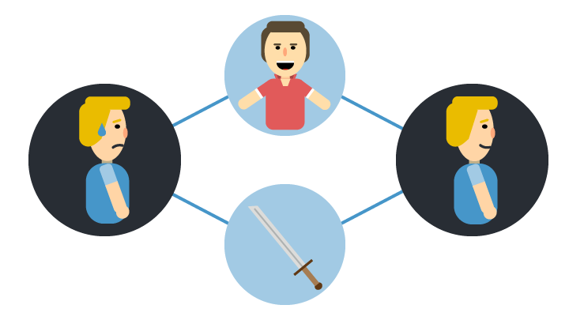
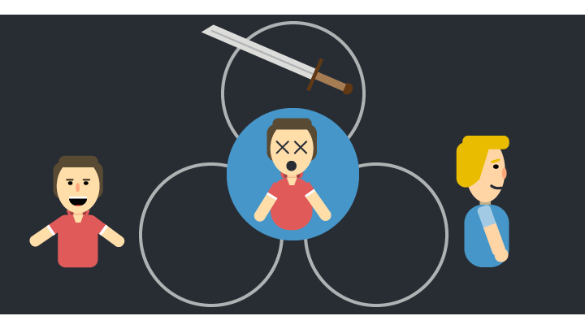
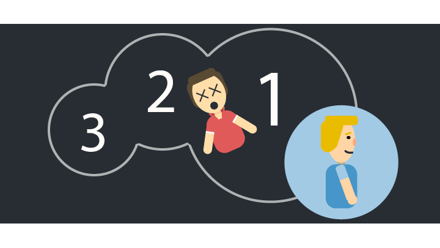
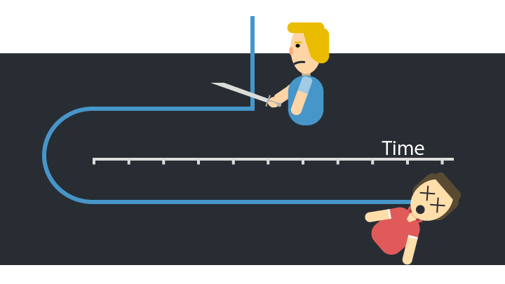
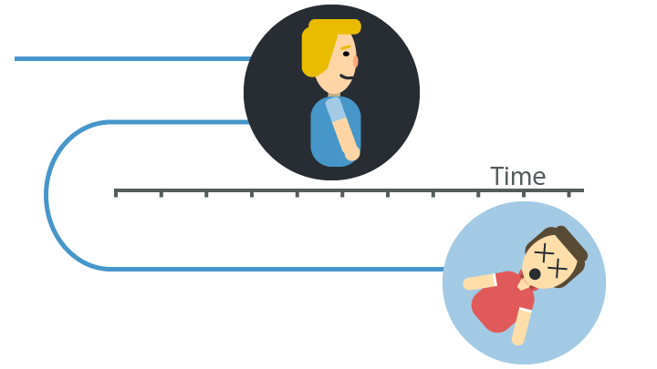

A good storyteller takes their audience on a journey. The story leaves them inspired and motivated. But telling a compelling story is hard. I recently went on a storytelling training and got introduced to eight common story structures. With the aid of these structures, it becomes easier tell a gripping tale. It's a great tool to tell your audience the story you want to tell.
Imagine you're giving a presentation for an interesting new piece of software you found. You introduce the basic facts, head into the business benefits section and close it off with some user references. Everybody thinks the idea sounds good and that the company should consider it. And then, nothing happens.
A week later, you're sitting in the same room. This time, you're part of the audience to a presentation by Brad, that pompous jerk from accounting. He starts talking about what a great product he just found out about, that he tried it and how it made his work so much fun. In fact, Brad says that everybody should start using it, just because it's so much fun! At the end of the presentation, you still don't know how Brad's idea would realise its business benefits. But you do notice that your manager is talking to Brad, offering to fund the project.
Why Brad's presentation worked
Besides illustrating that Brad is a jerk, we can also take away that business decisions aren't made on logic. Neuroscientific research explored decision making in people who had brain damage to its emotion-generating parts. They discovered that they functioned normally, but that they could not make simple decisions where all options had pros and cons. Emotions play a huge part in making decisions.
Emotional choices are later rationalised by the supposed benefits they bring.
It's the same in business. A choice is made because a piece of software makes work more fun, and who doesn't want that? That choice is then later rationalised by the supposed benefits it brings. Disregarding whether those benefits were already realised before the software was being used. That's storytelling and that's how Brad sold his idea better than you did.
Bigger projects require a mix of emotion and logic, because they require some distance due to their scope. But it all boils down to decision makers who want to feel good about their work. And that is an emotional decision by definition.
The What, How and Why
As laid out in Simon Sinek's book Start with Why, the three basic components you have in a story are the what, the how and the why. This is what he calls the Golden Circle:

What: the facts. There's nothing emotional about facts, it's plain and simple information. What do you do?
How: detail about how you perform your what. You do your job, but how do you do it? This is contextual information to the what.
- Why: in the innermost circle we have the why. This is, according to Sinek, the most important block. It's about your motivations, the reason why you're doing what you're doing. Why do you work where you do? What motivates you to do that? This is the point where you connect with people on a personal level.
The order in which you just saw them is how you did your presentation. You told them what the software did, how people could achieve their goals and then you closed off with why they would want to get it. This makes for a very dry and factual presentation.
On the other hand, B-who-must-not-be-named said his idea would made work more fun. And with this, the story became compelling and relatable. The audience was able to connect with his story. And, as you've guessed, this story started with the why.
We too can tell a story that's built around the why. To do this, we turn to these eight structures to deliver a story that captures your audience.
The Eight story structures
In each of these story structures, you'll find that there are basic components. You paint an ideal situation you want your audience to aspire. You describe the status quo and why that's a bad situation. And mixed in and around these two is the journey you crafted for your audience to cross this gap. All this has the how and the what sprinkled in between. They are the informative tidbits that you use to support your why.
1. The Monomyth
Also called the hero's journey, in the monomyth you take your audience on a rollercoaster. This story structure is found in many folktales, myths and religious writings. The story centers around a hero, be it you or another character, that is called upon to leave their home and go on a difficult journey.
The hero moves from a known, comfortable place into an unknown land. After overcoming a great trial, the hero returns home with the spoils of battle, be it a reward or newfound wisdom.
Examples of the monomyth in modern stories are all around. Take Star Wars for one, where Luke -- a farmhand who's no good in a blaster fight -- grows to be a hero to save Leia and destroy the death star.
In the monomyth, you can share the tale of your journey and captivate your audience with the wisdom you gathered along the way. Then you overcome your final challenge and come home. You reflect on the lessons learned on your journey, sharing your newfound wisdom with your audience.
2. The Mountain
The mountain is a carefully crafted story used to build up tension and drama. It follows the monomyth in overcoming a big, final challenge, but doesn't necessarily have a happy ending. It's built on overcoming increasingly difficult challenges and knows multiple ups and downs.

If we zoom in on Star Wars, we see that Luke first must get his message to Obi-Wan, then he rescues princess Leia and finally he destroys the death star. In this time, Luke becomes more and more like the hero we need him to be for his final challenge.
In the mountain, you use your story to tell your audience a personal tale. You learn in steps, talk about the challenges you had to overcome, and build it up to a big finale to really drive your point home. It slowly builds up tension and delivers a satisfying conclusion to your audience.
3. Sparklines
Sparklines are a structuring tool to present your audience with an ideal world you want them to achieve. A lot of famous speeches are structured in this way. They take the what is and show you the what could be.

Think of Steven Jobs' presentation of the first iPhone (video, 4:47). He described a device that holds the future of telephones, iPods and internet connectivity. He then takes you back to the current time of clunky, unusable internet phones. He finishes by showing the actual iPhone. All this is supported with great visuals.
With sparklines, you take your audience from the actual situation into the bright future you have in mind. You go back and forth and deliver your point by making your audience aspire that future scenario. This is what Brad did. He contrasted the future of more fun at work against the current situation. And that's what made management buy into his idea.
4. Converging ideas
You use converging ideas when you want to tell your audience a story of how different branches of thought came together in a single idea. It shows how your idea builds on the work of several people or originated at multiple issues.

We see this type of story used a lot in partnerships. When two people tell you how they met, they start at their current situation. Then they talk about two separate lives, two different activities. Yet, they ended up having the same idea, came to the same (online) place and met. They came together and have a shared story now.
The converging ideas structure is a wonderful tool you can use to show how great minds came together and solved a problem. Or on how certain relationships have formed to be a sum of more than their original parts.
5. The Petal
The petal story is a way of putting multiple people or stories around a central concept. When you try to figure out how to mesh several storylines together, you could also focus on telling them separately to illustrate a common purpose.

Let's go back to Steve Jobs. If you've watched the video (link again), you saw how he introduced the three different concepts (iPod, phone, internet) and connected them to one device. All three supported a single point.
You can use the petal structure to demonstrate how different stories are interconnected or to show how multiple scenarios relate back to the same idea. It's also a great structure for allowing multiple speakers to work on the same theme.
6. Nested Loops
Nested loops are used to layer several narratives on top of each other. It's a structure where multiple stories are started in succession, but none are finished. Then, the last story finishes and all others follow suit. They all support a key message, which is the starting and ending point of the first story.

The goal is to layer several stories around the central message, where the first story you start is the last to finish. It's not uncommon to see three or more layers on top of each other in such a structure.
This type of story is a classic TV trope, where a character is running into a difficult situation. They then have a dream, which gives them a new insight. When they wake up, meaning the dream has finished, they use that insight to resolve the situation at hand.
Of course, this is just a simple situation. You let a story play out until it nears the end and then go off into the next. The audience is left wondering as you cast layer upon layer, creating an intricately structured story. As you close off the loops one by one, you drive home your point in a single, satisfying conclusion.
7. In Media Res
This type of story works best for shorter presentations or segments. You begin your narrative in the heat of the moment. Guns are blazing and explosions all around. Then you suddenly jump back to the start and begin the story of how you got there.

Take the Kill Bill trilogy. It starts with taking out target number two, upon which we go back to the unfaithful day where it all started. The first movie even closes off at the end of target one, showing this plot type in full only when we look at the trilogy as a whole.
In media res is a technique you use to drop your audience in the action and get their attention straight away. You need to give them just enough information to keep them hooked and guessing, but not so much that they see the end already. It takes skill to get just right.
If done right, your audience will keep wondering about the solution, about what the scene leads to. They will focus on that pivotal moment and what happened right there.
8. False Start
A false start story starts off seemingly predictable. But then, when your audience is settled in to sit it out, you disrupt it and start all over again. It's a shock tactic used to give your audience false expectations.

Imagine yourself talking to a girl. She's telling you how she met a boy, someone she felt very interested in. She walked over to him, tapped him on the shoulder, chickened out and left. Then she tells you how she overcame her low self-image and succeeded the next time.
That's an example of a false start. You're led to believe that she talked to him and had a good time. The story is then shaken up by the quick turn from your expectations and gets a deeper, more involved meaning.
You use the false start when you tell a story where something went wrong. You then had to go back and start over. It keeps your audience engaged and shows them the benefit of trying multiple approaches to solve a problem. You illustrate that you may fail, but that you apply those important lessons to help you when you try again.
Master of eight
Now you know about eight types of story structures you can use to tell your tale. Next time, you know how to handle Brad and beat him at his own game. You will take your audience on a riveting hero's tale, a false start or tell them nested stories. Once you've cornered the basics, you will be able to start nesting these structures to create even more compelling stories.
But don't forget: focus on the why. If you build your story around the why, people will remember it. They will recall you and your idea.
I'm curious what story structures you plan on using in the future. Let me know in the comments.


Comments
Enabling comments requires your consent for Disqus to place cookies. You can review their privacy policy here.